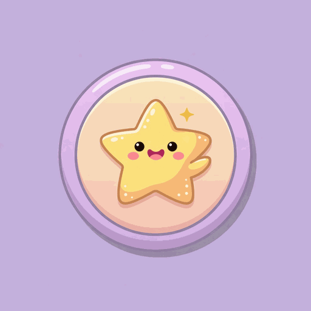
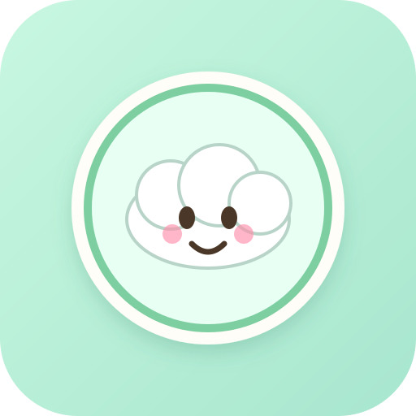
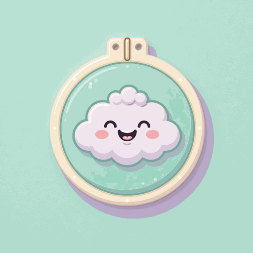

래스터 (Raster)
이미지를 픽셀 격자로 저장합니다. PNG, JPG, WebP, GIF, BMP, TIFF, ICO(내부)가 여기에 속합니다.
- 사진·복잡한 그라데이션·AI 생성 그림에 강함
- 픽셀 단위 세밀한 표현 가능
- 크게 확대하면 계단 현상(깨짐) 발생
- 해상도마다 파일을 따로 준비해야 할 수 있음
이 폴더의 AI 생성 뱃지 원본은 래스터입니다. 512px를 2048px로 키우면 선명도가 떨어집니다.
같은 귀여운 뱃지 아이콘이라도 확장자가 다르면 용도·용량·투명도·확대 품질이 완전히 달라집니다. 이 문서는 이 폴더에 들어 있는 8가지 포맷을 기준으로, 언제 무엇을 써야 하는지 정리한 실전 가이드입니다.
| 포맷 | 유형 | 투명도 | 확대 | 용량 | 대표 용도 | 아이콘 적합성 |
|---|---|---|---|---|---|---|
PNG .png |
래스터 | 알파 지원 | 깨짐 | 중간~큼 | 앱 아이콘, UI, 웹 | 적극 추천 |
SVG .svg |
벡터 | 자연 지원 | 무손실 | 매우 작음 | 웹 UI, 반응형 아이콘 | 적극 추천 |
ICO .ico |
래스터 묶음 | 알파 지원 | 내장 크기 사용 | 중간 | Windows 바로가기·favicon | Windows 필수 |
WebP .webp |
래스터 | 알파 지원 | 깨짐 | 작음 | 웹 최적화, 모던 브라우저 | 웹에 좋음 |
JPG .jpg |
래스터 | 없음 | 깨짐 + 아티팩트 | 작음 | 사진, 배경 있는 썸네일 | 배경 있을 때만 |
GIF .gif |
래스터 | 1bit(단순) | 깨짐 | 작~중 | 단순 애니메이션, 레거시 | 애니 필요할 때 |
TIFF .tiff |
래스터 | 지원 | 깨짐 | 큼 | 인쇄·편집 원본 | 작업용 |
BMP .bmp |
래스터 | 보통 없음 | 깨짐 | 매우 큼 | 레거시·무압축 호환 | 비추천 |
이미지를 픽셀 격자로 저장합니다. PNG, JPG, WebP, GIF, BMP, TIFF, ICO(내부)가 여기에 속합니다.
도형·경로·색을 수식(명령)으로 저장합니다. 이 폴더에서는 SVG가 해당합니다.
badge_*.svg는 코드로 그린 벡터 버전이라, PNG와 스타일은 비슷하지만 픽셀 단위로 동일하진 않습니다.
아이콘·UI 그래픽에서 가장 널리 쓰이는 포맷입니다. 무손실 압축이라 저장을 반복해도 화질이 깎이지 않고, 알파 채널(반투명 포함)을 지원해 둥근 뱃지·그림자 표현에 이상적입니다.
badge_star.png, badge_cloud.png이미지가 아니라 도형 설명서(XML 텍스트)입니다. 브라우저·디자인 툴이 경로를 다시 그려서, 16px든 4K든 가장자리가 깨끗합니다. 용량도 보통 수 KB 수준으로 매우 가볍습니다.
badge_star.svg, badge_cloud.svgWindows가 이해하는 아이콘 전용 컨테이너입니다. 파일 하나 안에 16×16, 32×32, 48×48, 256×256 등 여러 크기 이미지를 함께 넣습니다. 탐색기가 상황에 맞는 크기를 골라 쓰기 때문에 “작은 아이콘만 흐림” 문제를 줄일 수 있습니다.
badge_star.ico, badge_cloud.icoGoogle이 만든 웹 최적화 포맷입니다. 비슷한 화질에서 PNG/JPG보다 용량이 작은 경우가 많고, 손실·무손실·투명·애니메이션을 모두 지원할 수 있습니다.
badge_*.webp (손실 품질 위주 변환)사진 공유의 왕자지만, 아이콘에는 종종 비권장입니다. 가장 큰 이유는 투명 배경을 지원하지 않는다는 점입니다. 또한 손실 압축이라 가장자리·단색 영역 주변에 뭉개짐(아티팩트)이 생길 수 있습니다.
badge_*.jpg — 배경 포함 미리보기용인터넷 초창기부터 쓰인 포맷으로, 최대 256색 팔레트와 프레임 애니메이션이 특징입니다. 그라데이션이 많은 현대 아이콘은 색 밴딩이 생길 수 있고, 투명은 “완전 투명 / 불투명” 위주(반투명 그라데이션 약함)입니다.
badge_*.gif인쇄·스캔·전문가 워크플로에서 쓰이는 고품질 래스터 컨테이너입니다. 여러 레이어·고비트 심도·다양한 압축을 담을 수 있지만, 웹·모바일 앱 아이콘으로 배포하기엔 용량이 크고 호환 범위가 좁습니다.
badge_*.tiffWindows 고전 비트맵입니다. 구조가 단순해 일부 임베디드·레거시 환경에서 읽기 쉽지만, 압축이 거의 없어 용량이 매우 큽니다. 이 폴더에서도 512×512 기준 약 768KB로, WebP의 수십 배에 달합니다.
badge_*.bmp대략적인 상대 크기입니다. 실제 수치는 파일 탐색기에서 확인하세요. (세트마다 약간 다르며, 아래는 badge_star 쪽 경향을 기준으로 한 감각 차트입니다.)
미리보기는 브라우저가 바로 표시할 수 있는 PNG / SVG / JPG / WebP / GIF 위주입니다. ICO·BMP·TIFF는 탐색기에서 아이콘/속성으로 확인하세요.

GIF
SVG
GIFbadge_star.* / badge_cloud.* + 확장자
(png · jpg · webp · gif · ico · bmp · tiff · svg
상황에 따라 다릅니다. AI로 그린 귀여운 일러스트 뱃지는 PNG(또는 WebP)가 자연스럽고, 단색/라인 아이콘 시스템은 SVG가 압도적으로 관리하기 쉽습니다. 웹에서는 둘 다 쓰는 경우도 많습니다.
투명 배경이 없고, 압축 아티팩트가 가장자리 선명도를 해치기 쉽기 때문입니다. 아이콘은 작은 크기에서 “윤곽”이 생명인데, JPG는 그 윤곽을 부드럽게 뭉개는 경향이 있습니다.
예전엔 favicon.ico 하나로 충분했지만, 지금은
PNG 32/180, SVG, Apple touch icon 등을 함께 제공하는 편이 안전합니다.
Windows 앱/바로가기에는 여전히 ICO가 핵심입니다.
정상입니다. JPG/WebP(손실)·GIF(256색)는 색을 근사하고, PNG/TIFF는 원본에 더 가깝습니다. SVG는 아예 벡터로 다시 그린 별도 에셋입니다.
작업 원본은 PNG(투명) 또는 SVG(벡터)를 추천합니다. 배포 시점에 ICO/WebP/JPG로 변환하는 파이프라인이 가장 실수 적습니다.
투명 영역이 보통 검은색 또는 흰 배경으로 채워집니다. “동그란 뱃지”가 “사각형 이미지”로 보이기 시작하는 이유가 바로 이것입니다.
| 하고 싶은 일 | 추천 포맷 | 피하기 |
|---|---|---|
| 투명 뱃지를 Discord/웹에 올리기 | PNG 또는 WebP | JPG, BMP |
| 사이트 전체를 한 스타일 아이콘으로 | SVG 스프라이트/세트 | BMP, TIFF |
| Windows 폴더/앱 아이콘 교체 | ICO (여러 크기 포함) | SVG 단독, JPG |
| 로딩 스피너 같은 짧은 애니 | GIF / 애니 WebP / Lottie | 정적 JPG |
| 인쇄 포스터에 큰 로고 | SVG 또는 고해상도 PNG | 작은 JPG, GIF |
| 용량 비교·포맷 공부 | 전부 열어보기 (이 폴더 세트) | — |